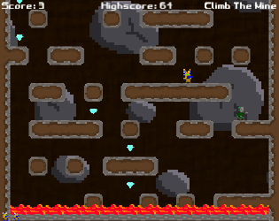

If you've never met me, you'll find I am a man of varied interests, mostly in Science, Nature, Astronomy, Photography, Computers and Video Games. This site is a professional summary of the things I have done over the years.
One of the two programmers on the 5 person team (others worked on Art, Sound and Music) created entirely through Reddit. Coded in Unity3D C#, I primarily worked on the general logic, AI, testing and fixing bugs. This game was created in 48 hours as part of the ShenaniJam Game Jam based around a given random theme, "Dude 52". Published and playable for free on Itch.io.
Designed, created pixel art and simple animations, developed in Unity with C# and sourced audio for 8-bit platformer now published online. It is procedurally generated and can be played indefinitely. The game was created for the “Game Development for Modern Platforms” course on Coursera. Published and playable for free on Kongregate and Itch.io.

Lead a team of 4 to design and develop a prototype game based around the theme “Waves”, in Unity3D. The idea was to have the player prevent a meltdown by figuring out the confusing controls on a nuclear reactor.
Fixing and testing for security, UI and performance issues related to an existing MeteorJS app connected to MongoDB, later transferred to AWS. Assisted with removing external JavaScript dependencies and converted code to native JavaScript without any framework.
Analyzing performance bottlenecks in ASP.Net code and SQL queries using NewRelic and using the data to design a better system in NoSQL using technologies like Redis, MongoDB and NodeJS. Optimizations in 2015 decreased the database load by 90% and allowed the site to stay up during the yearly holiday peak time, where in the past it has succumbed and gone offline. All this ultimately leading to less frustrated, happier online customers and increased conversions
Getting projects in C#/.NET ready to be deployed using Atlassian’s Bamboo, to help with Continuous Integration and Deployment. Worked with teams to help them write unit tests and maintain consistent Git flow to ease release of new features
A core developer on the team for designing and implementing a system for cardless online payments developed using C#, Redis, SQL and Couchbase. Millions of Indian users can now recharge money into a wallet system which gives them offers and allows a combination of payment methods in cases of insufficient balance.
Worked on a cross platform voxel based simulation sandbox project created in Meteor using technologies like CoffeeScript and Jade. The 3D component was accomplished using WebGL. The app allowed anyone who had access to a browser (regardless of whether on a desktop or mobile) and a url to edit a 3D voxel based world.
Created a minesweeper clone in my spare time, using Java. It makes use of custom designed algorithms to seed the board with randomly placed mines, assign numbers to squares and recursively reveal white squares. It also contains a panic button for when things are not going so well so you do not always have to rely on luck to hit a safe spot. Project available at https://github.com/AzureByte/SolvableMineSweeper
A young child must journey through dreamland helping ease other people's dreams and defeat the evil corrupting the dreamland of adults or risk the future being controlled by an unknown, dark force. Click here to read it.
Using the prototype created during the Global Game Jam 2017 this video pitches what the full game could be. The prototype can be found here.
The game is based around the idea of having a versus fighter with a group of people who want sleep but cannot get any. Click here to read it.
Proposed a work schedule for a hypothetical game that requried more than one person to make with a Programmer, Writer and Music Artist. Click here to see it.
Worked on various projects that utilize web technologies like GoLang, MeteorJS and MongoDB to build on existing projects or bring ideas to life.
Designed and implemented caching to increase the database performance by 90%. System migration out of SQL and toward open source technologies.
2015
Design and development of a new transactional system based around a digital wallet. Design and development of promotional offers using CouchBase, MongoDB and 3rd party API calls.
2014
Back-end integration of new Payment Gateways into BookMyShow's website. Maintaining code and fixing bugs. Database migration from MSSQL to MySQL including conversion of stored procedures and ASP .NET code. Researching new alternatives to existing systems and aiding in the shift to open source technologies like Node.js, MongoDB, Couchbase and GoLang.
Assisted in Data entry and database maintenance of Donor data. Wrote a popular article for ‘Panda Bulletin’. Gave a presentation titled ‘Energy Conservation in Animals’ to Teachers during the ‘Teachers’ Training Workshop’. Assisted in conducting a training workshop teaching students how to train others to be nature friendly. Spoke to principals of schools over the phone inviting inviting their students to the ‘Wild Wisdom Quiz’ and answering queries they had about the same.
Assisted in the study of life cycles of moths and in the awareness programmes for school children. Created a Microsoft Access Database system for the management of the data of the Leadership Course, along with a handy Manual to go with it. Surveyed the area of a newly built ‘watch tower’ to help assess the damage to the area’s ecosystem.
Assisted doctors in caring for animals. Answered phone calls to the clinic.
National Institute of I.T. - Mumbai, India
Nottingham Trent University - Nottinghamshire, U.K.
St. Xaviers College - Mahapalika Marg, Mumbai, India
St. Xaviers College - Mahapalika Marg, Mumbai, India
Lilavatibai Podar High School - Santa Cruz, Mumbai, India